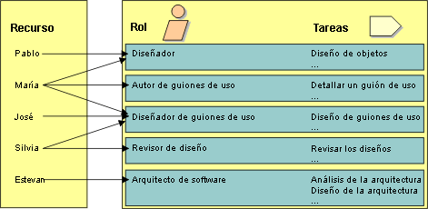

|
Un rol define el comportamiento y las responsabilidades de una persona o de un conjunto de personas que colaboran en la
empresa. El comportamiento de cada rol se define como un conjunto de tareas. Normalmente, las responsabilidades de cada
rol se definen de acuerdo con determinados productos de trabajo como, por ejemplo, documentos. Algunos ejemplos de
roles son el diseñador, el arquitecto de software y el revisor. A través del conjunto asociado de tareas, el rol
también define implícitamente una competencia.
Tenga en cuenta que los roles no son personas, sino que describen cómo deben comportarse las personas de la empresa y
qué responsabilidades tienen.
El proyecto normalmente tiene a su disposición una serie de recursos, personas que tienen unas competencias
específicas. Por ejemplo, José, María, Pablo y Silvia son personas con competencias diferentes, aunque solapadas.
Utilizando los roles definidos en el proceso de entrega, correlacione los recursos disponibles para el proyecto con los
roles que pueden tener.

La asociación de personas con roles es dinámica con el tiempo, y depende de la fase del ciclo vital del proyecto y del
trabajo que se debe realizar.
-
Una persona puede tener varios roles diferentes en el mismo día: por ejemplo, Silvia puede ser Revisora por la
mañana y Diseñadora de casos de uso por la tarde.
-
Una persona puede tener varios roles simultáneamente: por ejemplo, Juana puede ser Arquitecto de software y
Diseñadora de una determinada clase, así como la Propietaria del paquete que contiene esta clase.
-
Varias personas pueden tener el mismo rol para ejecutar juntos una determinada tarea, actuando en equipo: por
ejemplo, Pablo y María pueden ser Diseñadores del mismo caso de uso .
Intente asignar responsabilidades para que haya poco rechazo de productos de trabajo de un recurso a otro: haga que la
misma persona o equipo diseñe e implemente un subsistema, para que no tengan que volver a aprender el trabajo realizado
por otros.
Cuando el mismo equipo diseña a la vez que implementa, la transición desde el diseño a la implementación no es nada
brusca. Asimismo, permite desarrollar mejores diseñadores: si saben qué funciona y qué no, tendrán una idea más clara
de lo que es un buen diseño y podrán incorporarlo en futuros trabajos. Como un buen escultor, un buen diseñador debe
entender el medio de expresión, que en software es el entorno de implementación.
|